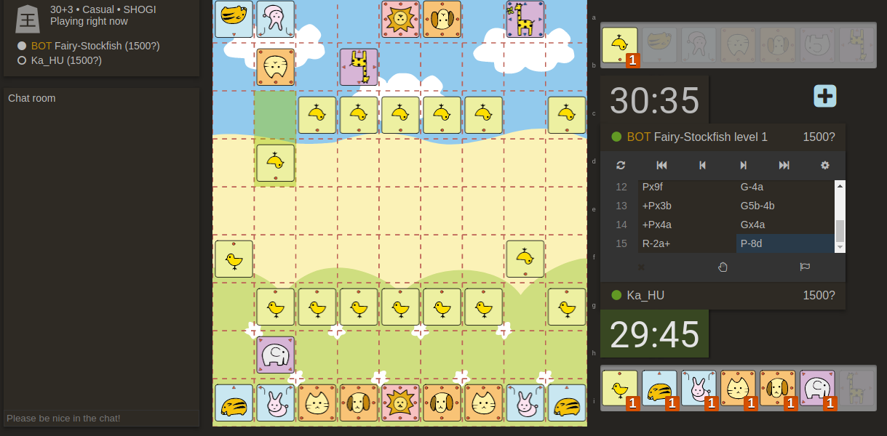

2020.04.08. Átköltöztettem az oldalt a Githubra a Google Sites-ról. Tisztább, szárazabb érzés. :)
2020.03.30. Két bábukészletet készítettem (illetve módosítottam) Sittuyinhoz (burmai sakk), ezeket feltöltöttem a Github oldalamra, illetve bekerültek a Pychess-Variants oldalára is.
2020.03.21. Elkészült egy új sakkbábukészlet (Kaneo Midnight) és frissült a Kanazawa Shogi app általam módosított változata (v.1.1-re). Frissítés: közben megkaptam a visszajelzést a 81Dojo-tól, hogy bekerült a fordításom a weboldalra, így már magyarul is elérhető az oldal! Hamarosan bekerül a fordítás az Android illetve iOS appokba is.
2020.03.13. Elindítottam egy sakk tematikájú pólóboltot is. Közben a Lichessnek is felajánlottam a Kaneo névre hallgató bábukészletet, de nem kérték. Ez van, marad a userstyle megoldás annak, aki használni szeretné.
2020.03.04. Elkészítettem az első sakkbábu készletemet, amely Kaneo névre hallgat. A grafikák letöltési linkje és telepítési útmutatója a Sakk menüpont alatt található.
2020.03.01. Elkészültem a Kanazawa Shogi Lite app módosított változatával, melybe bekerültek a nemzetközi bábuk, a doubutsu (állatkás) bábuk, illetve egy új kanjis szett is (red wood). A letöltési linkeket megtalálod a Shogi menüpont alatt a részletekkel együtt.
2020.02.23. Elérhetővé vált a Doubutsu Shogi szett a Pychess-Variants oldalán. Az általam készített készleteket ezentúl a Github repómba fogom feltölteni, de persze itt az oldalon is ki lesznek rakva.
2020.02.14. Újabb tartalmak kerültek fel a Shogi menüpont alá: 5 bábukészletet készítettem/módosítottam az utóbbi időkben, ezek mind svg formátumú vektorgrafikák, így bármilyen programhoz használhatók (ha svg-ben nem, akkor pl. png-be konvertálva), de az XBoardhoz és a gshogi nevű programhoz már elnevezve, készen letölthetők. Tervezem a Kanazawa Shogi app újabb módosítását is, melybe várhatóan a Doubutsu (állatkás) bábuk is bekerülnek majd, így a gyerekeknek is érdekesebb lehet a Shogi (tableten vagy telefonon is).
2020.02.02. Megnyílt az elektromos autó témájú pólóboltom is. A könyvmolyos is frissült a tegnapi napon, illetve a Shogi cheatsheetek is le lettek cserélve egy frissebb/jobb verzióra.
2020.01.30. További tartalmak kerültek fel a Shogi menüpont alá, többek között egy linkgyűjtemény is (mely várhatóan folyamatosan bővülni fog).
2020.01.26. Az utóbbi hetekben elindult néhány tematikus pólóboltom a Pólómánia partnereként. Pólók, ruházat, kiegészítők, dekorációk stb. érthetők el ezekben a webshopokban. Ezeket külön oldalon listázom majd (a fenti menüben megtalálod a linket hozzájuk). Külföldön élőknek, illetve külföldi vásárlóknak pedig a Redbubble-ön indítottam kollekciókat. Ha tesztszenek a minták, megköszönném, ha megosztanád a boltok linkjét másokkal is.
2020.01.19. A tegnapi napon elkészültem a 81Dojo magyar fordításával, melyet el is küldtem Hidetchinek. A mai napon azt a visszajelzést kaptam, hogy köszönettel elfogadták és a következő frissítéskor implementálják majd.